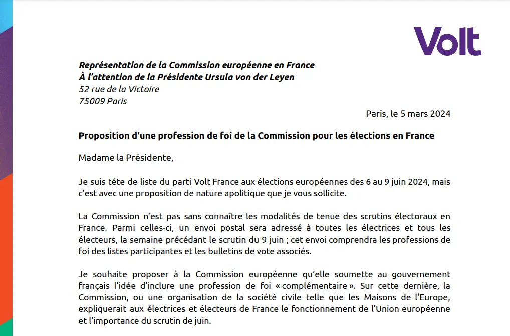

Bonjour! My name is Sven Franck and I'm lead candidate for Volt France and in 7th place dein the coalition Europe-Territoires-Écologie for the European parliament elections. On this site you can learn more out more about me and my political priorities, why I became a member of Volt and what I do for a living. Follow my campaign and if you consider me to be a good representative of your ideas in Parliament, vote for me!
My initiatives

A profession de foi for Europe
My letter to the European Commission to request the french government to include a profession about Europe in the official mailing to increase voter turnout. Read the letter
save-erasmus.eu
Across the continent, the far right is calling for the dissolution of the European Union. The end of Europe will also mean the end of Erasmus. Let's get our electoral cards and vote for Europe to save Erasmus! More information
votefrance.eu
There are between 1.5 million and 2 million European Union citizens living in France from other Member States. Let's mobilise to help them register to ensure that the far right does not win a majority in 2024. More information
One of Europe's strengths is the diversity of our SMEs. A European Small Business Act will reserve a portion of public contracts for SMEs, ensure legislation passed on european and national level does not disproportionally disavantage SMEs and strikes a balance between standardisation, openness and interoperability. Europe needs to find its own economic narratif combining diversity, sustainability and competitiveness. Let's ensure that SMEs are leading the way.
There are over 15 million mobile EU citizens living and working in another EU member state than their country of origin. By living the European idea, they are indirectly supporting nationalism, because they cannot vote in all elections in their country of residence and they are often excluded or have little incentive to vote in their country of origin. Our democracies need these votes, so let's work towards universal suffrage for mobile EU citizens.
Europe's foreign policy is today a cacophony of 27 member states and the commission each with their own objectives. At a time when it is no longer enough to preserve peace and stability within the European Union, it becomes essential for Europe to develop and defend a proper foreign policy that should also aim to preserving peace and stability abroad while adhering oursevels to the values we expect other countries to follow. It's time for a European foreign policy.
Online fraud is a problem that affects both young and old and that will only increase with more sophisticated technology. The solution is relatively simple and should include holding online merchants and financial institutions accountable for flagging transactions that have a high risk of originating from online fraud (like your grandmap wiring 25.000 to Ghana). Let's protect our vulnerable population against online scams!
I am a member of Volt, a European movement and political party with over 25,000 members in 31 European countries. Together with our elected representatives at European, national and local level, we share a common agenda, one of the pillars of which is to reform the European Union into a federal Europe that is not only an economic union, but also a democratic and social one. Changing politics for the better will be a long-term project, and you can help us get closer to that goal. By joining us. By supporting us. And by voting for Volt in the European elections!